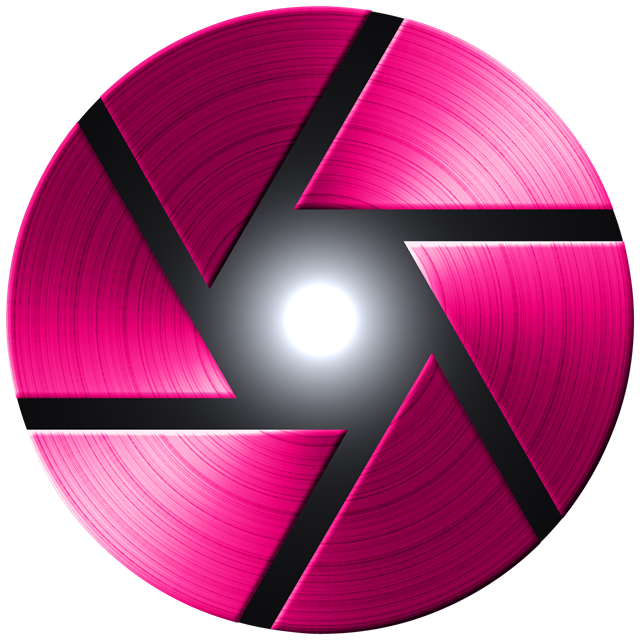
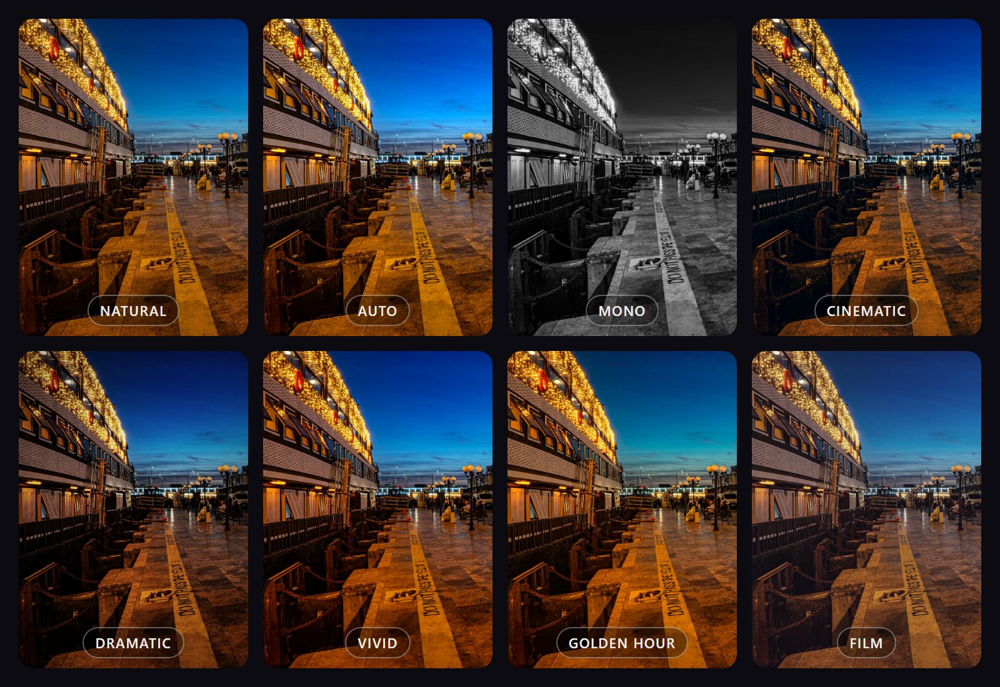
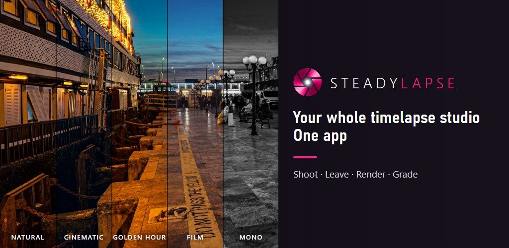

SHOOT · LEAVE · RENDER · GRADE
Set it up. Turn the screen off. Walk away. Clouds race, cities pulse, a drawing comes to life — the video builds itself while you're gone, in the look you choose. Change the look later, as often as you like.
Get it on Google Play Free to start · No ads · No account · No watermark
Make time visible.
Hours become seconds. The world moves too slowly to see — Steadylapse lets you watch it happen.
No laptop, no intervalometer cable, no editing. Just your phone on something steady.
Pick one of 20 ready-made scenarios — clouds, traffic, construction, sunset — or set the interval and number of shots yourself. You see the shoot length and the final video length before you start.
Turn the screen off. Steadylapse keeps shooting for hours, counts down to every frame and steps in before your phone overheats.
When the last frame is in, the time lapse is built on your phone in the color look you picked and saved to your gallery — even if you've left the app.
Your frames are always shot natural. The color is applied when the video is built — so you can try a look before you shoot and change it after, as often as you like. The original is never overwritten.

Take a test frame and tap through 8 looks — Natural, Auto, Mono, Cinematic, Dramatic, Vivid, Golden Hour and Film.
Pick another look on the summary card and render a new version. Your first video stays exactly as it was.
Re-render any earlier shoot from your gallery — or any video on your phone. Preview is free; rendering with a look is PRO.
From a ten-minute sky to a building that takes a season. Here's where to start — the built-in scenarios set the numbers for you.
The classic. Fast clouds turn a quiet sky into weather in motion.
START WITH · 2–5 s INTERVALStreets that never stop. Add a slower manual shutter PRO and headlights stretch into ribbons of light.
START WITH · 1–2 s INTERVALGolden hour into blue hour. Holy Grail PROBETA follows the fading light, frame by frame.
START 30 MIN BEFORE SUNSET · 3–6 sWeeks of work in seconds. Ghost Frame PRO lines up today's shot with yesterday's.
START WITH · 1–5 min INTERVALSeedlings stretch, flowers open and turn to the light. Patience, compressed.
START WITH · 5–15 min INTERVALA study session, a painting, a build on your desk — hours of focus in a minute. The front camera is free.
START WITH · 3–10 s INTERVALEverything is read from your phone: if a lens can't do something, Steadylapse tells you instead of showing a setting that silently does nothing.
Shoots in the background with the screen off. Eco mode, heat protection and a live “time remaining” keep long sessions on track — and interrupted shoots are recovered.
Manual ISO, shutter speed, white balance presets and focus — plus free exposure, focus and white-balance locks to keep every frame consistent.
Main and front for free; ultra-wide and telephoto with PRO — whatever your phone shares with apps, at its real zoom range. Pinch to zoom, swipe to switch.
Shooting a garden or a building site over days? Yesterday's last frame overlays your live view so you line up exactly where you left off.
1080p, or 4K on phones that support it PRO. 24 or 30 fps, portrait or landscape. No watermark, no time limit — even in the free version.
8 looks, from Cinematic to Film. Preview them for free on a test frame, render with them in PRO — and change the look of any shoot later.
Keep every frame as JPEG, RAW DNG or both — ready for Lightroom. Each shoot gets its own folder. DNG on phones and lenses that offer it.
Shoot the same scene again and again? Save all your settings under a name and load them next time. Anything your phone can't do is skipped, and the app tells you.
As daylight fades, ISO and shutter speed ramp gradually, frame by frame, to follow the light into dusk. In beta: results depend on your phone's camera.
Set it. Leave it.
Come back to a film.
Your camera app's time-lapse mode picks everything for you. That's great for a quick clip. Steadylapse is for when you want to decide.
| Typical built-in mode | Steadylapse | |
|---|---|---|
| Choose the interval and number of shots — see the final length before you start | Picks the speed for you | Your call, to the second |
| Shoot for hours with the screen off — and recover an interrupted shoot | Varies | Built for it |
| Line up a multi-day project with yesterday's frame | No | Ghost Frame PRO |
| Manual ISO, shutter, white balance and locks for consistent frames | No | Full control |
| Keep every frame — JPEG or RAW (DNG) — for editing | Video only | Every frame PRO |
| Change the color look after the shoot, from the original frames | Filters on the finished video | 8 looks, re-render anytime |
| Save your settings for the next shoot of the same scene | — | My Setups |
| See exactly what your phone's camera can and can't do | — | Read from your device |
Built-in modes differ by phone and brand. Many phones' own night modes can expose far longer than apps are allowed to — for stars and deep night, your built-in camera may do better.
No overpromises, no tracking, no surprises. Steadylapse is made by Emrah Üstdağ, an independent photographer and developer — no company behind it.
Every lens, ISO range and shutter speed comes from your device. If something isn't supported, the app says so — and you can see your phone's limits in the app.
No account, no sign-in, no analytics on your shots. Frames and videos are saved to your gallery and never leave your phone.
No ads, no watermark, no time limit, no project limit. PRO adds tools — it doesn't hold your videos hostage.
The free version has no time limit, no watermark and no ads.
Short answers to what photographers ask first.
Your phone's built-in mode chooses the speed and exposure for you and gives you a video. Steadylapse lets you choose the interval and length, shoot for hours or across days, set exposure and white balance yourself, line up multi-day projects and keep every frame. If you just want a quick clip, the built-in mode is fine; if you want control, that's what Steadylapse is for.
Eight color looks (Natural, Auto, Mono, Cinematic, Dramatic, Vivid, Golden Hour, Film). Your frames are always shot natural and the look is applied when the video is built, so you can render the same shoot again in another look at any time. If you kept the frames, the new version is built from them; if not, the video itself is re-colored. The original file is never overwritten. Previewing looks is free; rendering with them is PRO.
Yes, with PRO, on phones and lenses that offer RAW to apps. Choose JPEG, DNG or both under Keep All Frames. DNG files are large and take longer to save, so Steadylapse measures your phone's safe minimum interval and won't let a DNG shoot run faster than your phone can write.
Yes — that's one of the most popular uses. The front camera is free, the screen can stay off for hours, and the video is ready when you're done.
Yes. Steadylapse runs as a foreground service with a notification, so Android keeps it alive while the screen is off. For overnight sessions, keep the phone charging and turn off automatic restarts or app updates for the night — the in-app checklist walks you through it.
Usually not. Most phones limit how long third-party apps can expose a single frame — often well under a second, much shorter than the built-in night mode. That's enough for twilight, city lights and the moon, but not for faint stars. Steadylapse reads your phone's real limits and shows them, so you know before you shoot.
It's in beta. It ramps exposure smoothly from daylight into dusk, until your phone reaches its longest allowed exposure — after that the video gently darkens. Results depend on your phone's camera, so do a short test run first. Start about 30 minutes before sunset for the best transition.
Frames are saved to your phone as they're taken. If the battery dies or the phone restarts, Steadylapse finds those frames the next time you open it and lets you build the video or keep the frames.
Android 10 or newer with a camera. Lenses, 4K, manual settings and exposure range vary by phone — Steadylapse reads them from your device and clearly marks anything your phone doesn't support.
No. PRO is tied to your Google account: open Steadylapse on any phone signed in to the same account and PRO is restored. It also stays unlocked when you're offline, out in the field.
No. There's no account and no sign-in. The app only goes online through Google Play to show prices and handle purchases. Your photos never leave your phone.
The app's screens are in English for now. The store page, this website and the in-app guide topics are written to be easy to follow.

Put your phone somewhere steady, pick a scene and let the hours pass.
Get it on Google Play Free to start · No ads · No account